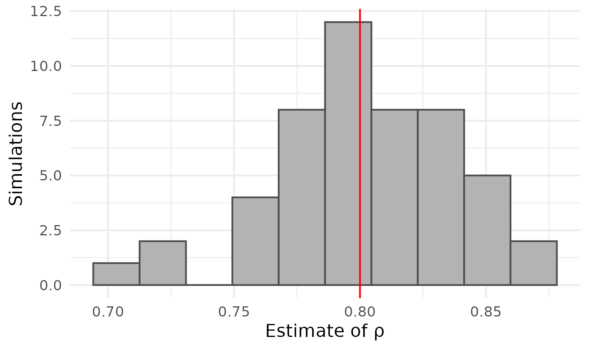

Autocorrelation and simulation
2026-11-19
Source:vignettes/autocorrelation-simulation.Rmd
autocorrelation-simulation.RmdThis vignette covers the autocorrelation of the residuals of a plant over time, and simulation studies: simulating data from a fitted model, refitting it, and comparing the estimates with the true parameters, including the autocorrelation parameter.
A logistic growth curve with correlated random effects of the plants on the asymptote and the time of the maximum growth rate, as in the vignette Fixed and random effects, here without treatment effects:
library(gcTMB)
library(ggplot2)
fitre <- gcTMB(height ~ DAS, rform = b1 + b2 ~ 1 | plant_ID, data = FabaHeights25)Autocorrelation of the residuals
The random effects shift the whole curve of a plant, but a plant that
is above its curve at one measurement often stays above it at the next.
The correlation argument models this autocorrelation of the
residuals within a group over time, with the same correlation structures
as the package nlme (Pinheiro and Bates, 2000; Zuur et al., 2009,
Chapter 6). The residuals
of a group are normal with the residual variance
and
with
the correlation of residuals one unit of time apart.
corAR1() is the autoregressive process of order 1 at
integer times (or at the positions of the observations, with
form = ~ 1 | group), with
;
corCAR1() its continuous-time version, for unequally spaced
times, with
.
Residuals of different groups are independent, and the correlation is
available for the gaussian and lognormal (on the log scale) families. As
the process is Markov, each residual given the previous one of its
group,
earlier, is normal with mean
and variance
,
so the likelihood is exact and its cost linear in the number of
observations; with random effects, the Laplace approximation integrates
them out as before.
The parameter
is estimated on an unconstrained scale, as in nlme. For
corCAR1(), with
,
this is the logit link,
.
For corAR1(), with
,
it is
,
the logit of
,
which maps the interval
to the real line (twice Fisher’s
-transformation,
).
coef() reports the parameter on this scale, as
cor_par:CAR1 or cor_par:AR1, and
corpars(), summary() and
confint() report
itself.
The heights are measured every 7 days, so with
corCAR1(form = ~ DAS | plant_ID)
is the correlation per day, and
that of consecutive measurements:
fitrec <- gcTMB(height ~ DAS, rform = b1 + b2 ~ 1 | plant_ID, data = FabaHeights25,
correlation = corCAR1(form = ~ DAS | plant_ID))
summary(fitrec)
#> Call:
#> gcTMB(form = height ~ DAS, rform = b1 + b2 ~ 1 | plant_ID, data = FabaHeights25,
#> correlation = corCAR1(form = ~DAS | plant_ID))
#>
#> Model: logistic, truncated at b4 = 0
#> Family: gaussian, identity link for all parameters
#>
#> Number of observations: 200, groups: plant_ID 25
#> Log-likelihood: -489.3 (df = 8), AIC: 994.5, BIC: 1021
#>
#> Coefficients:
#> Estimate Std. Error
#> b1:(Intercept) 121.30 2.481
#> b2:(Intercept) 30.85 0.579
#> b3:(Intercept) 12.92 0.354
#>
#> Random effects:
#> Groups Name Std.Dev. Corr
#> plant_ID b1 10.623
#> b2 2.361 0.00032
#>
#> Residual standard deviation: 3.097
#>
#> Correlation structure: continuous-time AR(1) in DAS within plant_ID
#> rho: 0.9536
#>
#> Optimiser: relative convergence (4), maximum absolute gradient 7.8e-05
corpars(fitrec)^7
#> rho
#> 0.7171103
anova(fitre, fitrec)
#> Likelihood ratio tests of gcTMB models
#>
#> npar AIC BIC logLik deviance LR Df Pr(>LR)
#> fitre 7 1041.35 1064.4 -513.67 1027.35
#> fitrec 8 994.54 1020.9 -489.27 978.54 48.814 1 2.815e-12 ***
#> ---
#> Signif. codes: 0 '***' 0.001 '**' 0.01 '*' 0.05 '.' 0.1 ' ' 1confint() gives the profile likelihood interval of
,
or with method = "wald" a Wald interval computed on the
logit scale and transformed back:
confint(fitrec, parm = "cor_par:CAR1")
#> Computing profile confidence intervals ...
#> 2.5 % 97.5 %
#> rho 0.9126283 0.9786432Simulation
A simulation study has four steps: fit a model to data, simulate new data sets from the fitted model, refit the model to the simulated data, and compare the estimates with the true parameters, the estimates of the original fit.
The true model
We fit a logistic growth curve to the heights of the faba beans in
FabaHeights25, with random effects on the asymptote
,
the time of the maximum growth rate
and the scale
of each plant. The random effects of a plant are correlated: their
covariance matrix is unstructured. The threshold
and the asymmetry
are fixed at their defaults,
(the curve starts at zero at time 0) and
(the symmetric curve).
fitsim <- gcTMB(height ~ DAS, rform = b1 + b2 + b3 ~ 1 | plant_ID, data = FabaHeights25)
fitsim
#> Call:
#> gcTMB(form = height ~ DAS, rform = b1 + b2 + b3 ~ 1 | plant_ID,
#> data = FabaHeights25)
#>
#> Model: logistic, truncated at b4 = 0
#> Family: gaussian, identity link for all parameters
#>
#> Coefficients:
#> b1:(Intercept) b2:(Intercept) b3:(Intercept)
#> 123.26 31.23 13.14
#>
#> Random effects:
#> Groups Name Std.Dev. Corr
#> plant_ID b1 15.959
#> b2 2.939 0.40
#> b3 2.314 0.79 0.66
#>
#> Residual standard deviation: 1.425
converged(fitsim)
#> [1] TRUEThe fitted model is the true model of the simulation. Its parameters are:
fixef(fitsim)
#> b1:(Intercept) b2:(Intercept) b3:(Intercept)
#> 123.25579 31.23392 13.14102
VarCorr(fitsim)
#> $plant_ID
#> b1 b2 b3
#> b1 254.67912 18.597356 29.125050
#> b2 18.59736 8.638855 4.482818
#> b3 29.12505 4.482818 5.355880
#> attr(,"stddev")
#> b1 b2 b3
#> 15.958669 2.939193 2.314277
#> attr(,"correlation")
#> b1 b2 b3
#> b1 1.0000000 0.3964847 0.7885960
#> b2 0.3964847 1.0000000 0.6590337
#> b3 0.7885960 0.6590337 1.0000000
#>
#> attr(,"sc")
#> [1] 1.425242
sigma(fitsim)
#> [1] 1.425242Other true models can be made from it with update(),
e.g. update(fitsim, fixef = c(b1 = 150)) for a larger
asymptote, update(fitsim, VarCorr = ...) for other
covariance matrices of the random effects, or
update(fit, rho = ...) for another autocorrelation, as
below.
Simulating new plants
We simulate 50 new plants, each measured at 10 equidistant days from
day 5 to day 100. Each plant in newdata is a new curve,
with its own random effects drawn from the fitted covariance matrix.
simdata <- expand.grid(DAS = seq(5, 100, length.out = 10),
plant_ID = paste("plant", 1:50, sep = ""))
simdata$height <- simulate(fitsim, nsim = 1, seed = 1, newdata = simdata)[[1]]
head(simdata)
#> DAS plant_ID height
#> 1 5.00000 plant1 4.616344
#> 2 15.55556 plant1 18.614698
#> 3 26.11111 plant1 42.784774
#> 4 36.66667 plant1 70.291639
#> 5 47.22222 plant1 90.988424
#> 6 57.77778 plant1 103.232752Refitting the model
The same model is fitted to the simulated data.
simfit <- gcTMB(height ~ DAS, rform = b1 + b2 + b3 ~ 1 | plant_ID, data = simdata)
converged(simfit)
#> [1] TRUEconverged() checks that the log-likelihood is finite,
that the optimiser reports convergence with a largest absolute gradient
below
,
and that the Hessian is positive definite. With few individuals and
several correlated random effects, the likelihood is often so flat in
some directions that nlminb reports “singular convergence”
or “false convergence”, or stops with a gradient slightly above
,
although it is at the maximum. With
control = list(restart = TRUE), such a fit is optimised
once more from its estimates. The fit keeps the better optimum, and
fit$restart$improvement holds the improvement of the
log-likelihood. converged() accepts a fit that the restart
improved by less than lltol
(
by default), since its maximum is stable. In a simulation study that
does not need standard errors, sdreport = FALSE also saves
about a quarter of the time of each fit, but then the Hessian is not
checked. Here, with three plants:
small <- expand.grid(DAS = seq(10, 80, length.out = 8), plant_ID = paste0("p", 1:3))
small$height <- simulate(fitsim, newdata = small, seed = 1)[[1]]
f0 <- gcTMB(height ~ DAS, rform = b1 + b2 + b3 ~ 1 | plant_ID, data = small,
control = list(sdreport = FALSE))
converged(f0)
#> [1] TRUE
f1 <- gcTMB(height ~ DAS, rform = b1 + b2 + b3 ~ 1 | plant_ID, data = small,
control = list(sdreport = FALSE, restart = TRUE))
f1$restart$improvement
#> NULL
converged(f1)
#> [1] TRUEThe 95% parametric bootstrap confidence intervals of the coefficients
and the variance parameters are compared with the true values, the
estimates of the original fit. confint reports the standard
deviations of the random effects and the residual standard deviation on
their natural scale, while coef has them on the log scale,
so the true values and the estimates are transformed in the same way.
The correlations of the three random effects stay on the unconstrained
scale of coef.
ci <- confint(simfit, method = "boot", nsim = 50, seed = 1)
#> Computing bootstrap confidence intervals (50 simulations) ...
natural <- function(p){
lg <- grepl("^log_", names(p))
p[lg] <- exp(p[lg])
p
}
truth <- natural(coef(fitsim))
tab <- data.frame(true = truth, estimate = natural(coef(simfit)), ci,
covered = truth >= ci[, 1] & truth <= ci[, 2],
check.names = FALSE)
# the standard deviations are on their natural scale: drop "log_" from their names
rownames(tab) <- sub("^log_", "", rownames(tab))
tab
#> true estimate 2.5 % 97.5 % covered
#> b1:(Intercept) 123.2557884 124.7046225 122.0663680 128.4934417 TRUE
#> b2:(Intercept) 31.2339180 31.0178958 30.3393128 31.7475657 TRUE
#> b3:(Intercept) 13.1410201 13.0178543 12.5337589 13.5044439 TRUE
#> sd:b1|plant_ID 15.9586691 12.9573092 10.4295490 15.6065557 FALSE
#> sd:b2|plant_ID 2.9391929 2.8380119 2.1096368 3.3180830 TRUE
#> sd:b3|plant_ID 2.3142774 1.8670908 1.3425639 2.2129696 FALSE
#> corr_par:b2,b1|plant_ID 0.4318811 0.3693471 0.1306010 0.6497686 TRUE
#> corr_par:b3,b1|plant_ID 1.6240947 1.4339582 0.9735193 2.2815465 TRUE
#> corr_par:b3,b2|plant_ID 0.7770189 0.6994179 0.3455368 1.1851682 TRUE
#> sigma 1.4252424 1.5088877 1.4035895 1.6334311 TRUEThe simulated heights and the estimated curves of the 50 plants:
grid <- expand.grid(DAS = seq(5, 100, length.out = 200), plant_ID = unique(simdata$plant_ID))
grid$height <- predict(simfit, newdata = grid)
ggplot(simdata, aes(DAS, height, group = plant_ID)) +
geom_line(data = grid, colour = "grey50", linewidth = 0.3) +
geom_point(size = 0.8) +
labs(x = "Days after sowing", y = "Height") +
theme_bw()
In a full simulation study, these steps are repeated for many
simulated data sets, e.g. to estimate the coverage of the confidence
intervals or to compare growth models with criteria(), as
below for the autocorrelation.
Recovering the autocorrelation
With a correlation structure, simulate() draws the
residuals of each group with the autocorrelation of the fit: within a
plant in newdata, ordered in time, each residual given the
previous one,
earlier, is normal with mean
times the previous residual and variance
.
update() is designed for simulation studies like this one:
it sets some of the parameters of a fitted model to chosen values and
keeps the others, without refitting, so that the result can serve as the
true model of the simulation. Its arguments are fixef for
the coefficients, VarCorr for the covariance matrices of
the random effects, sigma for the residual standard
deviation, and rho for the autocorrelation.
Here the true model is the fit fitrec from above, with
correlated random effects of the plants on
and
and continuous-time AR(1) residuals. Its autocorrelation,
per day, is set to
with update(), and all other parameters keep their
estimates:
rho0 <- 0.8
fitcar <- update(fitrec, rho = rho0)update() changes
and nothing else, so the other parameters are those estimated together
with
.
Alternatively, a new fit with
fixed at 0.8, corCAR1(value = 0.8, fixed = TRUE), estimates
the other parameters given
.
This is the way to go when the true model should fit the data as well as
possible with the chosen
,
and it has the higher log-likelihood; update() is the way
to go when only
should differ from the fitted model, e.g. to compare simulations with
different autocorrelations and otherwise the same parameters.
fitfix <- gcTMB(height ~ DAS, rform = b1 + b2 ~ 1 | plant_ID, data = FabaHeights25,
correlation = corCAR1(value = rho0, form = ~ DAS | plant_ID, fixed = TRUE))
pars <- function(f) c(fixef(f)[c("b1:(Intercept)", "b2:(Intercept)", "b3:(Intercept)")],
sigma = sigma(f), corpars(f), logLik = as.numeric(logLik(f)))
rbind(estimated = pars(fitrec), updated = pars(fitcar), refitted = pars(fitfix))
#> b1:(Intercept) b2:(Intercept) b3:(Intercept) sigma rho
#> estimated 121.3037 30.85266 12.91934 3.096797 0.953607
#> updated 121.3037 30.85266 12.91934 3.096797 0.800000
#> refitted 121.0881 30.85452 12.84211 2.077088 0.800000
#> logLik
#> estimated -489.2680
#> updated -520.4286
#> refitted -501.4697We simulate from the updated model: 50 data sets of 30 new plants,
each measured at 12 unequally spaced days between day 10 and day 63. We
fit the model to each data set, now with
estimated. confint() computes the Wald interval of
on the logit scale and transforms it back.
days <- c(10, 13, 17, 21, 24, 28, 35, 38, 42, 49, 56, 63)
design <- expand.grid(DAS = days, plant_ID = paste0("p", 1:30))
sims <- simulate(fitcar, nsim = 50, seed = 1, newdata = design)
carsim <- do.call(rbind, lapply(sims, function(y){
dat <- cbind(design, height = y)
f1 <- gcTMB(height ~ DAS, rform = b1 + b2 ~ 1 | plant_ID, data = dat,
correlation = corCAR1(form = ~ DAS | plant_ID))
ci <- confint(f1, parm = "cor_par:CAR1", method = "wald")
data.frame(rho = corpars(f1)[["rho"]], lower = ci[1], upper = ci[2],
covered = ci[1] <= rho0 & rho0 <= ci[2])
}))The means of the estimates of and of the bounds of their 95% Wald intervals, and the coverage of the intervals, against the true value 0.8:
colMeans(carsim[, c("rho", "lower", "upper", "covered")])
#> rho lower upper covered
#> 0.8008316 0.7197344 0.8630185 0.9600000
ggplot(carsim, aes(x = rho)) +
geom_histogram(bins = 10, fill = "grey70", colour = "grey30") +
geom_vline(xintercept = rho0, colour = "red") +
labs(x = expression(paste("Estimate of ", rho)), y = "Simulations") +
theme_minimal()